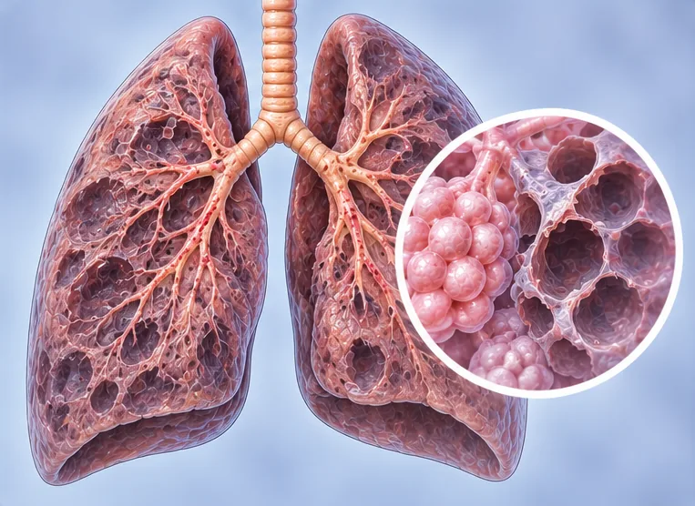
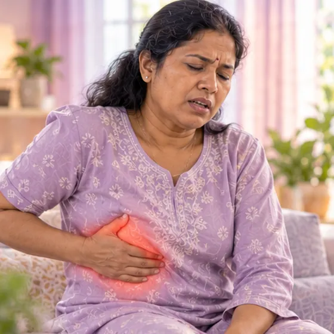

胸膜间皮瘤
发生在肺外层薄膜上的癌症，常与石棉有关
这是什么
这是一种从肺外层薄膜（胸膜）开始的癌症，常在接触石棉很多年后才出现。
- 肺的外层薄膜
- 常与接触石棉有关
- 胸痛、气短
- 就诊科室
- 肺科医生、肿瘤科医生
- 多发人群
- 多为以前接触过石棉的成年人
- 传染性
- 不传染
- 病程
- 因人而异；癌症治疗团队可以为你说明
常见表现

吸气时胸痛胸膜性胸痛 
爬楼梯气短劳力性呼吸困难 
干咳干咳 
不明原因体重下降不明原因体重下降 
夜间盗汗盗汗 
总是疲劳疲劳
为什么会这样

病因尚未完全明确特发性
其他原因
- 吸入石棉纤维，常常是多年以前
- 从事隔热材料、造船、建筑或采矿工作
- 与带回石棉粉尘回家的人同住
出现这些情况请先看医生
- 突然或严重呼吸困难：拨打999
- 咳血
- 新出现或加重的胸痛，或越来越严重的气短
- 不明原因体重下降，或咳嗽久久不好
- 胸壁出现新肿块，或脸部、手臂肿胀
如果有以上情况，请先看医生，再来做调理。
本页只是一般性的健康资讯。请继续按时服用平常的药物，并继续看医生。
请继续日常治疗
请继续按医嘱服药，并按时复诊。我们的调理是温和的辅助，不能代替医疗。
日常护理

遵循医疗团队的方案专科随访 
戒烟戒烟 
咨询药剂师药剂师建议
更多自我照顾的方法
- 向治疗团队询问止痛、饮食和心理支持
- 累了就休息，需要时请家人朋友帮忙
告诉理疗师
- 癌症或正在治疗癌症
- 心脏病
- 服用抗凝药
- 心脏起搏器或金属植入物
- 发烧或正在感染
调理师会在开始前和你确认这一项。
相关疾病
参考资料: General information based on public health sources such as Mayo Clinic, NHS, Cleveland Clinic and NCBI StatPearls.
页面更新: 2026-10-31